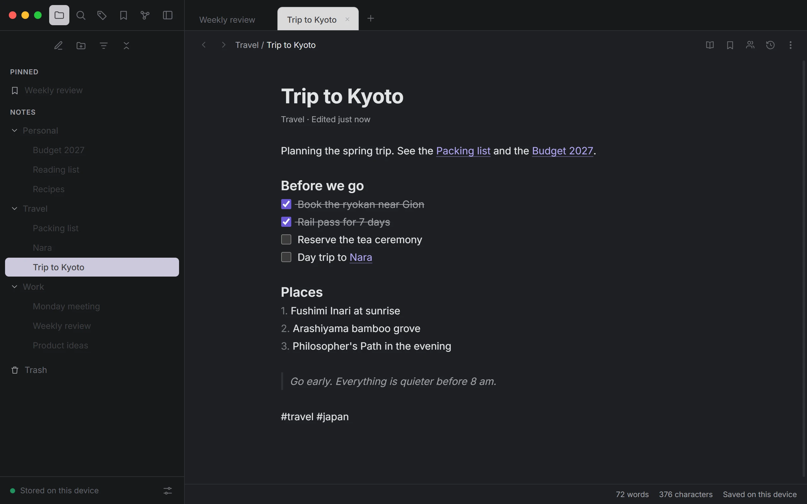
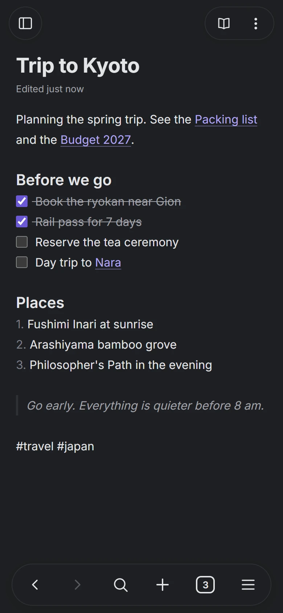
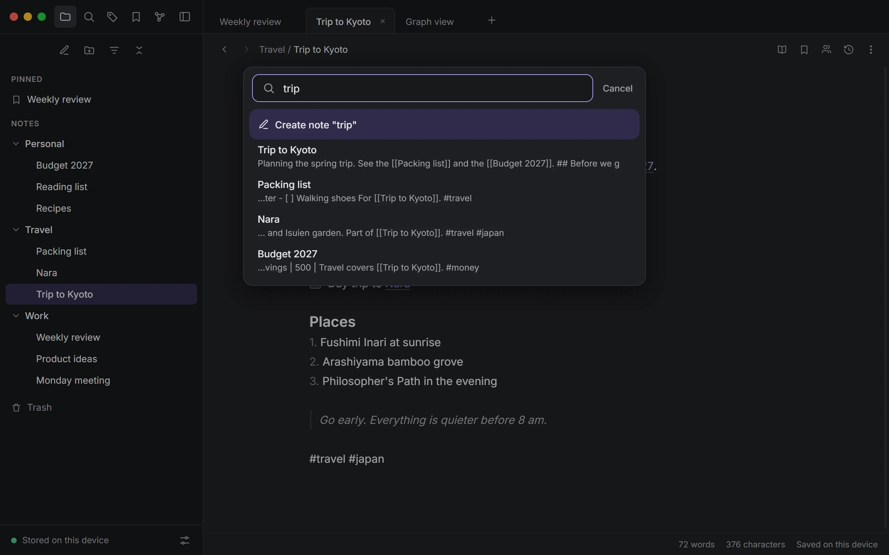
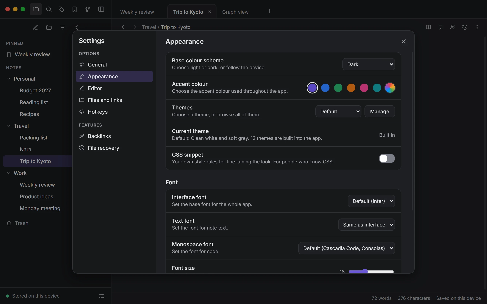

Free, private notes
Write on your computer, carry on on your phone. Private, encrypted and always in sync.


Up and running in three steps
No sign-up is needed to start writing.
-
1
Download and install
Get Flint from the top of this page and open the file. It takes about a minute.
See the install steps -
2
Write your first note
Type, add pictures, record your voice or draw. Everything is saved on your device as you go.
Try it in the tour -
3
Turn on sync when you want it
Make a Flint account, keep your recovery key safe, and sign in on your other device. Your notes appear there.
How your notes are protected
Write, link and find your notes
Text, pictures, files, voice notes and drawings. Stored on your device, and the same on every device you use.
Sync
Write on your computer and carry on on your phone. Changes arrive in seconds.
End-to-end encryption
Notes are encrypted on your device before they are sent. The server cannot read them.
Sharing
Give someone view or edit access to a note by their email.
Version history
See earlier versions of a note and restore one.
Links and graph
Connect notes with [[links]], see backlinks, and browse it all as a graph.
Works offline
Everything is on your device first. No connection needed to read or write.
Plain files
Each note is also a Markdown file in a folder you choose.
Themes
Light and dark themes, accent colours and fonts.
Images and files New
Add photos, PDFs and other files to a note. They sync encrypted, like your text.
Voice notes and drawings New
Record a voice note or sketch something, right inside your note.
Tables and code New
Real tables, and colours for code in more than 100 languages.
Import from Word New
Bring in Word files with their pictures. Paste from Google Docs and keep the formatting.
A closer look
Swipe through Flint, or pick a screen.



Take it with you
The full app on your phone, with the controls at the bottom where your thumb is.
Home screen widget
Start a new note straight from your home screen.
Share into Flint
Send text from any other app and it becomes a note.
Fingerprint lock
Lock the app with your fingerprint or screen lock.
Recent notes
Long-press the Flint icon to jump to a recent note.
Faster with the keyboard
The shortcuts in Flint for Windows.
- New note
- CtrlN
- Find or create a note
- CtrlO
- Search in all notes
- CtrlShiftF
- Find in this note
- CtrlF
- Open graph view
- CtrlG
- Close tab
- CtrlW
- Show or hide the sidebar
- Ctrl\
- Open settings
- Ctrl,
- Open a link in a new tab
- Ctrlclick
- New note from anywhere in Windows
- CtrlAltN
Installing Flint
Flint is not in an app store yet, so Windows, Mac and Android ask once before installing. This is normal.
Windows
- Open the downloaded Flint-Setup file.
- If a blue box says Windows protected your PC, click More info, then Run anyway.
- Follow the setup and click Finish.
Later versions install from inside the app: Settings → Updates.
Mac
- Open the downloaded Flint .dmg file and drag Flint into Applications.
- Open Flint. If your Mac blocks it, open System Settings, then Privacy & Security.
- Scroll down and click Open Anyway.
For a later version, download it from this page again.
Android
- Open the downloaded Flint.apk from your notifications or the Downloads app.
- If asked, allow your browser to install unknown apps.
- Tap Install, then Open.
Later versions install from inside the app: Settings → Updates.
Your notes stay yours
Flint is built so that nobody else can read what you write.
Locked before it leaves
Notes and files are encrypted on your device before they are sent. The sync server only stores locked data and cannot read it.
On your device first
Everything is saved on your computer or phone. Flint works with no connection, and sync is your choice.
No tracking on this page
No cookies, no ads and no visitor counting. This page only asks GitHub for the newest version number.
Only you hold the key
Your password unlocks your notes. A recovery key, shown once when you sign up, is the only other way in.
Shared only with who you pick
A shared note opens only for the people you name, to view or to edit. You can take access back at any time.
Fingerprint lock
On your phone, Flint can ask for your fingerprint or screen lock every time it opens.
Yours to take away
Notes can be kept as plain Markdown files in a folder you choose, and exported as a backup. Nothing is locked in.
Mistakes can be undone
Earlier versions of a note are kept for 30 days, and deleted notes go to the trash first.
Safe updates
Updates come from inside the app and are only taken from Flint's own releases page.
Questions and answers
Click a question to open it.
Is Flint free?
Yes. Flint is free for Windows, Mac and Android, and it has no ads.
Do I need an account?
Not to write. You can install Flint and use it straight away. An account is only needed for sync between devices and for sharing notes.
Where are my notes kept?
On your own device. If you turn on sync, an encrypted copy is also kept on the sync server so your other devices can fetch it. The server cannot read it.
What if I forget my password?
Use the recovery key you were shown when you signed up. Keep it somewhere safe: without your password or your recovery key, nobody can unlock your synced notes, not even us.
Why do Windows, Mac and Android warn me when I install?
Flint is not in an app store yet, so each of them asks once before installing. This is normal. The install steps show what to click.
How do I get new versions?
On Windows and Android, from inside the app: open Settings, then General, then Updates. You do not need to come back to this page. On a Mac, download the new version from this page.
Can I take my notes out of Flint?
Yes. Flint can keep every note as a plain Markdown file in a folder you choose, and you can export a backup from Settings.
Can I bring in notes from Word or Google Docs?
Yes. Flint opens Word files with their pictures, and text pasted from Google Docs keeps its formatting.
Is there a version for iPhone?
Not yet. Flint is for Windows 10 and 11, Mac, and Android 7 and newer.
Start writing in a minute
Free, with no ads. Your notes are ready as soon as it opens.
- Works offline
- End-to-end encrypted sync
- Updates from inside the app